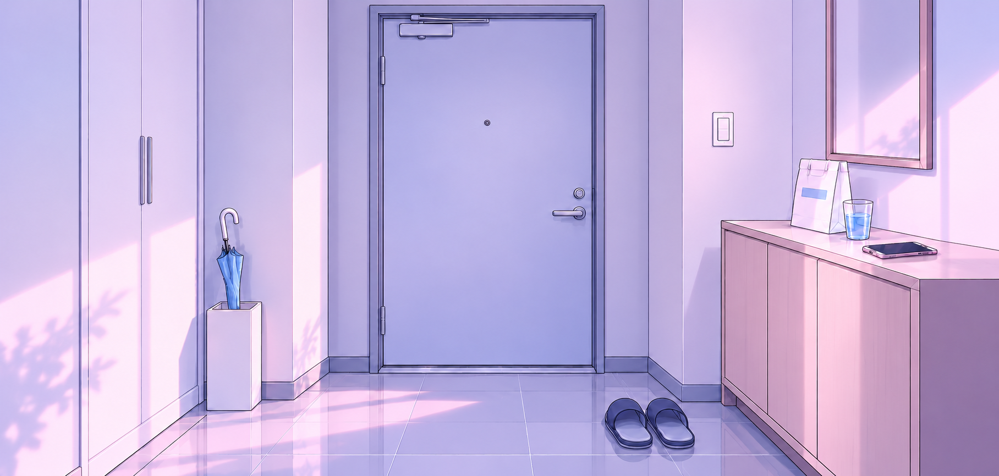

♥
한이결.exe
소개·프로필
세계관
시작 상황
주변 인물
이용 가이드
음악
엘린 · 연결 예정
노디 · 연결 예정
♥ I-GYEOL / 현관
_ □ ×

당신의 오래된 소꿉친구
한이결
좁은 방 안에서 당신을
너무 오래 기다린 소꿉친구.
방문 열기 →
INTRO.txt · 소개 더 읽기
⚠ TW 확인
현대
ALL
소꿉친구
다크로맨스
스토킹
♥ PROFILE
당신이 모르는 사이에 남은 것들
▰ 프로필 폴더
_ □
RECORDS
기록을 뒤집어 보세요 ↗